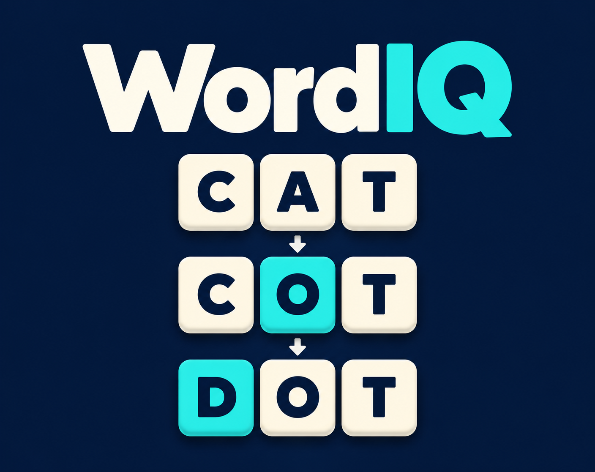

Word puzzles
WordIQWord Ladder Puzzle Game
Travel from one word to another, one change at a time. Find the ladder that gets you there.
Play WordIQ on itch.ioFree to play in your browser.

Watch the WordIQ trailer
About WordIQ
Find a connection between a starting word and a target word. WordIQ asks you to follow a ladder of word changes, choosing your next step from the available words. Look ahead: the most familiar word may not lead where you want to go.
How to play
- Read the starting word and the target word.
- Choose from the available next words to build your ladder.
- Continue until you reach the target; use Reveal Path when you want to see the solution.